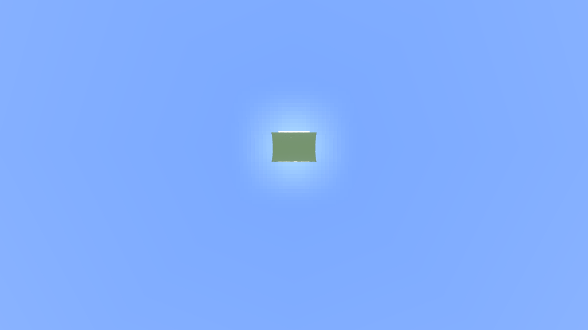

NATIVE TORUS EXPERIMENT · 27 OCTOBER 2026
Space's three terrains,
rendered inside Minecraft.
A new experimental Fabric mod bends Sodium's near geometry and Distant Horizons' far geometry with Space's actual torus mapping, tangent camera and local correction. This is a rendering adapter; Minecraft gameplay physics and entities remain flat. Nature, Copper Metropolis and Aether Archipelago were imported from the original generators and measured against Space.
28 October correction: this initial experiment set nominal FOV to 70° but did not disable Minecraft's flight FOV effect. The actual projection was wider. Its cross-renderer images and workload are therefore not camera-matched. Use the new common-detail comparison, which validates the actual projection matrix and reruns all three terrains. The original measurements below are retained as historical evidence.
This is an eight-zone comparison, not a full-world benchmark. Each terrain contains four real zones around the camera and four across the torus hole: 8 of 128 world zones (6.25% of the surface area). The rest is empty. Both renderers use the same fixture and standard 1 m cells; microvoxel decoration is excluded. The isolated far patch in the upward screenshots is the bounded fixture, not a complete ring silhouette.
24,576 chunks
All Minecraft cells validated, including air, RGB and material flags. All 8,192 DH cache entries per terrain are confirmed with SQLite WAL included.
6,000 projection checks
Java vs actual Space mapping: maximum difference 3.26 × 10⁻⁹ m.
Measured application performance
1280 × 720 actual rendered pixels, nominal vertical FOV 70° (native flight effect still enabled; see correction above), eye (8192.5, 180, 1024.5), near radius 8 chunks, far radius 576 chunks. Near views face north and 18° down; across views face north and 85° up. Apple M1 Pro; Minecraft 1.21.1 / Java 21 / Sodium 0.6.13 / DH 3.3.3. Only these rendering mods, the new adapter and required Fabric dependencies were loaded.
| Terrain / view | Native FPS | Native frame ms | Space FPS | Space CPU ms | Space GPU span ms | Space far faces |
|---|
| Nature / near view | 377.7 | 2.648 | 120.0 | 1.297 | 1.530 | 108,220 |
| Nature / across the hole | 344.1 | 2.906 | 120.0 | 1.127 | 0.804 | 72,534 |
| Copper Metropolis / near view | 318.1 | 3.144 | 120.0 | 1.614 | 2.901 | 310,134 |
| Copper Metropolis / across the hole | 275.8 | 3.625 | 120.0 | 1.245 | 1.460 | 204,724 |
| Aether Archipelago / near view | 280.6 | 3.564 | 120.0 | 1.393 | 1.706 | 406,596 |
| Aether Archipelago / across the hole | 246.7 | 4.054 | 120.0 | 1.132 | 1.300 | 331,020 |
Native FPS is uncapped; browser presentation may be refresh-limited. Space CPU spans measure the application frame callback, while GPU spans are asynchronous WebGPU pass envelopes, not GPU busy counters. Native GPU time is not instrumented. These columns are different measurements: do not divide native frame time by Space GPU time or interpret the FPS ratio as an algorithm speedup.
Each renderer used six balanced blocks: flat, torus near, across, across, torus near, flat. Each block warms for 5 seconds and collects 10 seconds. Native preparation and a further 60-second warmup precede sampling. Accepted data contains 63,133 native frame intervals, 21,640 browser frame intervals and 3,606 GPU samples. Games ran sequentially, and Minecraft was stopped before browser sampling.
Flat versus curved, within each renderer
| Terrain | Native frame ms: flat → torus | Change | Space GPU ms: flat → torus | Change |
|---|
| Nature | 1.923 → 2.648 | +37.7% | 1.507 → 1.530 | +1.5% |
| Copper Metropolis | 2.365 → 3.144 | +32.9% | 2.436 → 2.901 | +19.1% |
| Aether Archipelago | 2.709 → 3.564 | +31.5% | 1.401 → 1.706 | +21.7% |
This is the same camera and source terrain with different projection, so the visible workload also changes. It is not a measurement of sine/cosine instructions alone. The experimental native adapter adds conservative bent-frustum calculations; it retains DH's original flat-distance LOD quadtree. Flat-specific occlusion and face-direction rejection are disabled in both native modes to avoid false rejection in the curved case. Consequently the flat control is not the maximum-performance stock Minecraft configuration.
Inspect image quality and coverage
Torus near view
Across the hole

Sodium + Distant Horizons + torus adapterSpace, existing rendererFlat control
Torus near view
Across the hole
Flat control
Torus near view
Across the hole
Flat control
The fixed-view captures align the major buildings and islands. At these settings, native captures show finer roof and window edges; Space has coarser distant reconstruction and much stronger blue fog across the hole. Both display the opposite patch and its island openings. Compare landmark positions, openings and silhouettes. Lighting, sky, ambient occlusion, near/far stitching and distant cell sizes remain different. Equal source cells do not guarantee equal distant image quality. The across-hole views exercise a small, distant patch and mostly sky; they are coverage checks and a separate workload, not a replacement for near-view performance.
What this experiment establishes
Space GPU time changes from flat to torus by about +1.5% in Nature, +19.1% in Copper Metropolis and +21.7% in Aether Archipelago. Submitted far faces increase by roughly 60%, 94% and 141%, respectively. The visible geometry changes substantially with projection, so these measurements do not identify the torus formula itself as the dominant cost.
The same curved-coordinate mapping can run on the native Sodium and Distant Horizons mesh pipelines without hardware ray tracing. Correctness requires changing camera-relative vertex projection and CPU visibility bounds together. Applying a vertex warp alone would leave flat-space visibility decisions capable of deleting valid terrain.
It does not establish that replacing Space's renderer with DH would produce the native FPS shown here. DH's hierarchy, distance metric, lighting and coarse reconstruction differ, while the native port itself is an experimental adapter. The next useful controlled experiment is to match projected LOD error and silhouette quality, then profile moving-camera visibility and geometry submission. Keep Space's current production representation while doing that; this change adds benchmark fixtures and the native comparison mod.
Reproduce and audit
Mod source, dataset contract and build instructions · Space benchmark launcher · Summary with p95 and per-block results · Generator seeds and source hashes · Configuration and binary provenance · Projection validation · DH cache coverage · Excluded attempts
The functional nature probe overlapped automated tests and is excluded. Initial shader-injection errors, a JVM compiler crash and Retina window-size failures are excluded; mismatched dimensions abort before accepted sampling. The final adapter recalibrates the disposable window before warmup. Full terrain validation is reused only for an unchanged, previously validated test save. Existing Minecraft installations and user saves were not modified.